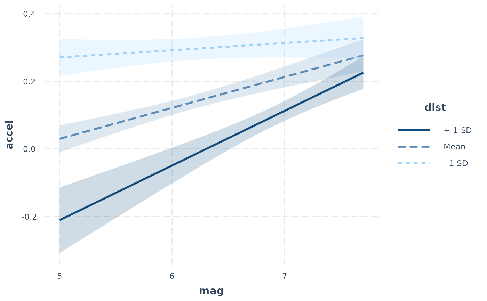
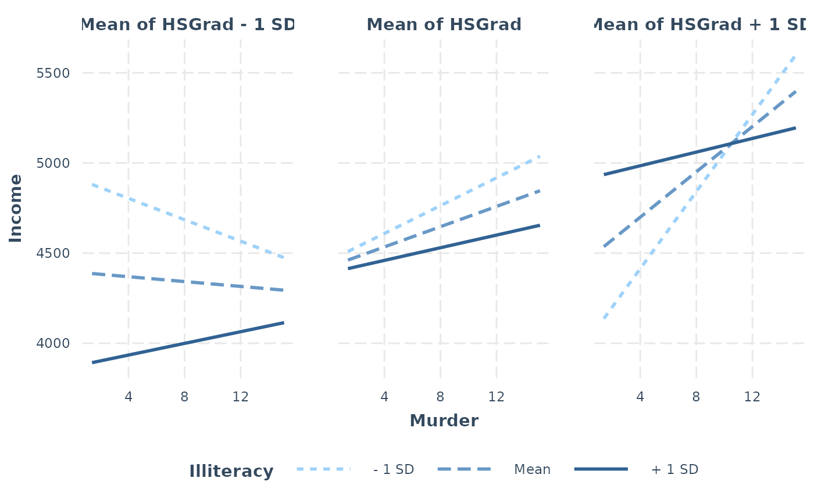
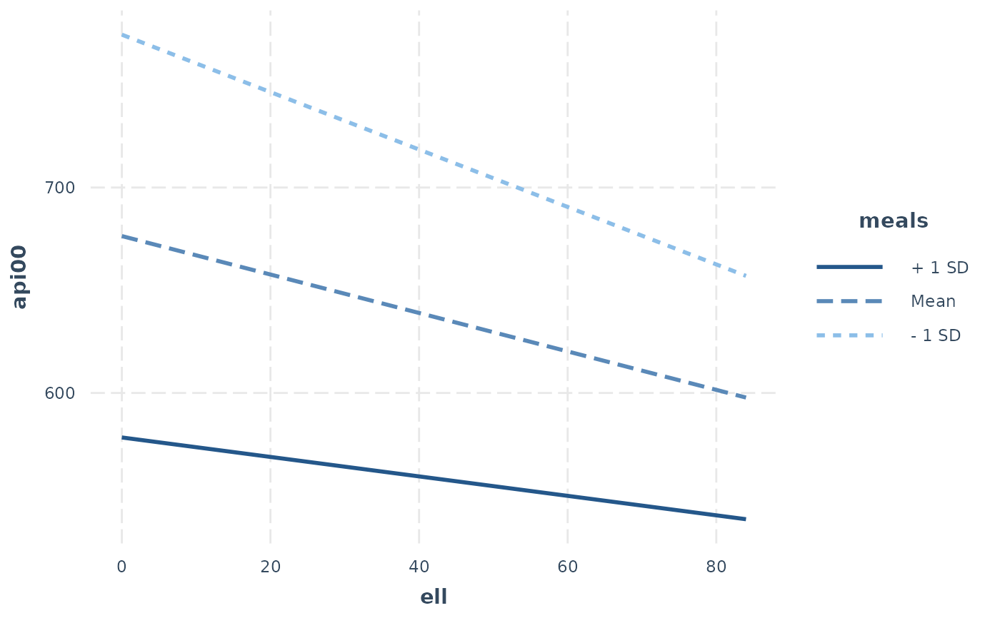
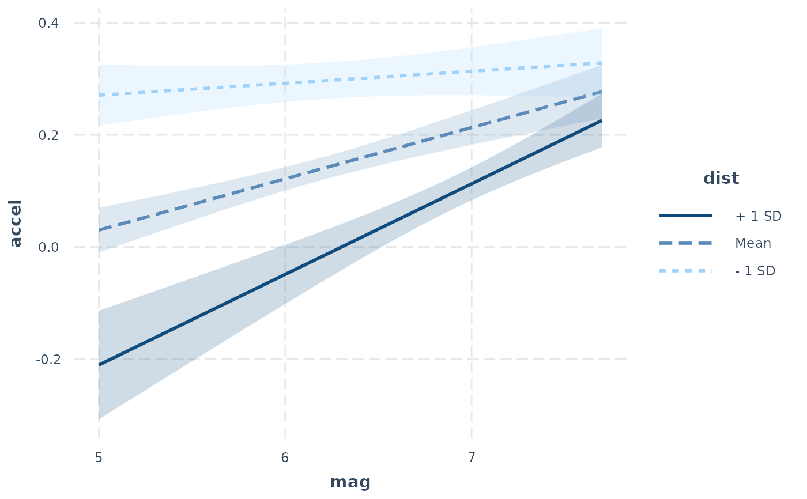
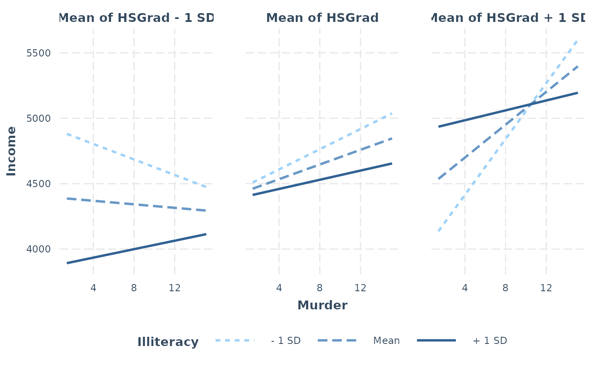
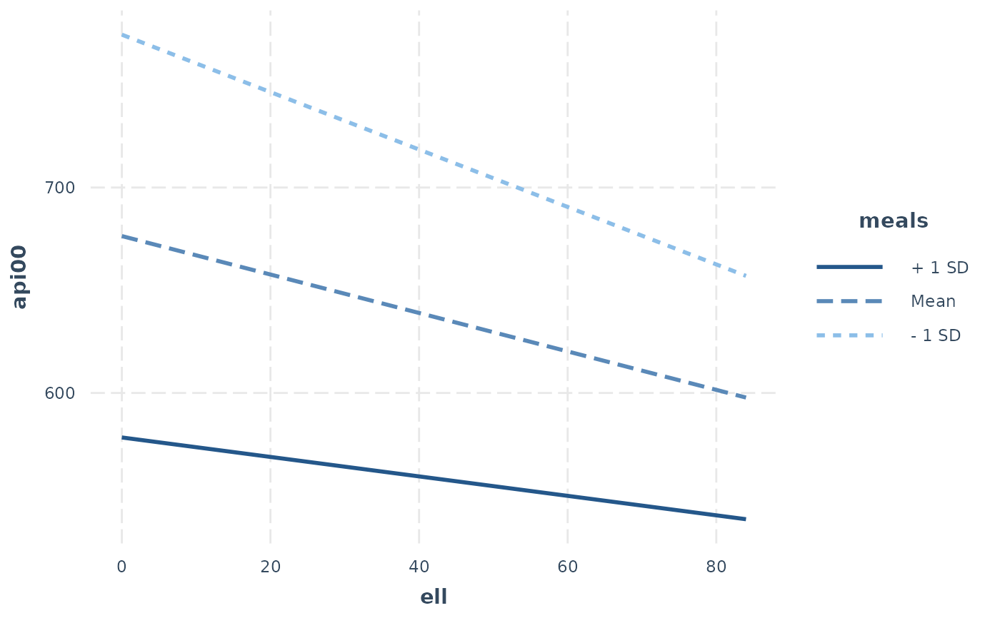

interact_plot plots regression lines at user-specified levels of a
moderator variable to explore interactions. The plotting is done with
ggplot2 rather than base graphics, which some similar functions use.
Usage
interact_plot(
model,
pred,
modx,
modx.values = NULL,
mod2 = NULL,
mod2.values = NULL,
centered = "all",
data = NULL,
at = NULL,
plot.points = FALSE,
interval = FALSE,
int.type = c("confidence", "prediction"),
int.width = 0.95,
outcome.scale = "response",
linearity.check = FALSE,
facet.modx = FALSE,
robust = FALSE,
cluster = NULL,
vcov = NULL,
set.offset = 1,
x.label = NULL,
y.label = NULL,
pred.labels = NULL,
modx.labels = NULL,
mod2.labels = NULL,
main.title = NULL,
legend.main = NULL,
colors = NULL,
line.thickness = 1,
vary.lty = TRUE,
point.size = 1.5,
point.shape = FALSE,
jitter = 0,
rug = FALSE,
rug.sides = "b",
partial.residuals = FALSE,
point.alpha = 0.6,
color.class = NULL,
...
)Arguments
- model
A regression model. The function is tested with
lm,glm,svyglm,merMod,rq,brmsfit,stanregmodels. Models from other classes may work as well but are not officially supported. The model should include the interaction of interest.- pred
The name of the predictor variable involved in the interaction. This can be a bare name or string. Note that it is evaluated using
rlang, so programmers can use the!!syntax to pass variables instead of the verbatim names.- modx
The name of the moderator variable involved in the interaction. This can be a bare name or string. The same
rlangproviso applies as withpred.- modx.values
For which values of the moderator should lines be plotted? There are two basic options:
A vector of values (e.g.,
c(1, 2, 3))A single argument asking to calculate a set of values. See details below.
Default is
NULL. IfNULL(ormean-plus-minus), then the customary +/- 1 standard deviation from the mean as well as the mean itself are used for continuous moderators. If"plus-minus", plots lines when the moderator is at +/- 1 standard deviation without the mean. You may also choose"terciles"to split the data into equally-sized groups and choose the point at the mean of each of those groups.If the moderator is a factor variable and
modx.valuesisNULL, each level of the factor is included. You may specify any subset of the factor levels (e.g.,c("Level 1", "Level 3")) as long as there is more than 1. The levels will be plotted in the order you provide them, so this can be used to reorder levels as well.- mod2
Optional. The name of the second moderator variable involved in the interaction. This can be a bare name or string. The same
rlangproviso applies as withpred.- mod2.values
For which values of the second moderator should the plot be facetted by? That is, there will be a separate plot for each level of this moderator. Defaults are the same as
modx.values.- centered
A vector of quoted variable names that are to be mean-centered. If
"all", all non-focal predictors are centered. You may instead pass a character vector of variables to center. User can also use "none" to base all predictions on variables set at 0. The response variable,pred,modx, andmod2variables are never centered.- data
Optional, default is NULL. You may provide the data used to fit the model. This can be a better way to get mean values for centering and can be crucial for models with variable transformations in the formula (e.g.,
log(x)) or polynomial terms (e.g.,poly(x, 2)). You will see a warning if the function detects problems that would likely be solved by providing the data with this argument and the function will attempt to retrieve the original data from the global environment.- at
If you want to manually set the values of other variables in the model, do so by providing a named list where the names are the variables and the list values are vectors of the values. This can be useful especially when you are exploring interactions or other conditional predictions.
- plot.points
Logical. If
TRUE, plots the actual data points as a scatterplot on top of the interaction lines. The color of the dots will be based on their moderator value.- interval
Logical. If
TRUE, plots confidence/prediction intervals around the line usinggeom_ribbon.- int.type
Type of interval to plot. Options are "confidence" or "prediction". Default is confidence interval.
- int.width
How large should the interval be, relative to the standard error? The default, .95, corresponds to roughly 1.96 standard errors and a .05 alpha level for values outside the range. In other words, for a confidence interval, .95 is analogous to a 95% confidence interval.
- outcome.scale
For nonlinear models (i.e., GLMs), should the outcome variable be plotted on the link scale (e.g., log odds for logit models) or the original scale (e.g., predicted probabilities for logit models)? The default is
"response", which is the original scale. For the link scale, which will show straight lines rather than curves, use"link".- linearity.check
For two-way interactions only. If
TRUE, plots a pane for each level of the moderator and superimposes a loess smoothed line (in gray) over the plot. This enables you to see if the effect is linear through the span of the moderator. See Hainmueller et al. (2016) in the references for more details on the intuition behind this. It is recommended that you also setplot.points = TRUEand usemodx.values = "terciles"with this option.- facet.modx
Create separate panels for each level of the moderator? Default is FALSE, except when
linearity.checkis TRUE.- robust
Should robust standard errors be used to find confidence intervals for supported models? Default is FALSE, but you should specify the type of sandwich standard errors if you'd like to use them (i.e.,
"HC0","HC1", and so on). IfTRUE, defaults to"HC3"standard errors.- cluster
For clustered standard errors, provide the column name of the cluster variable in the input data frame (as a string). Alternately, provide a vector of clusters.
- vcov
Optional. You may supply the variance-covariance matrix of the coefficients yourself. This is useful if you are using some method for robust standard error calculation not supported by the sandwich package.
- set.offset
For models with an offset (e.g., Poisson models), sets an offset for the predicted values. All predicted values will have the same offset. By default, this is set to 1, which makes the predicted values a proportion. See details for more about offset support.
- x.label
A character object specifying the desired x-axis label. If
NULL, the variable name is used.- y.label
A character object specifying the desired x-axis label. If
NULL, the variable name is used.- pred.labels
A character vector of 2 labels for the predictor if it is a 2-level factor or a continuous variable with only 2 values. If
NULL, the default, the factor labels are used.- modx.labels
A character vector of labels for each level of the moderator values, provided in the same order as the
modx.valuesargument. IfNULL, the values themselves are used as labels unlessmodx,valuesis alsoNULL. In that case, "+1 SD" and "-1 SD" are used.- mod2.labels
A character vector of labels for each level of the 2nd moderator values, provided in the same order as the
mod2.valuesargument. IfNULL, the values themselves are used as labels unlessmod2.valuesis alsoNULL. In that case, "+1 SD" and "-1 SD" are used.- main.title
A character object that will be used as an overall title for the plot. If
NULL, no main title is used.- legend.main
A character object that will be used as the title that appears above the legend. If
NULL, the name of the moderating variable is used.- colors
See
jtools_colorsfor details on the types of arguments accepted. Default is "CUD Bright" for factor moderators, "Blues" for +/- SD and user-specifiedmodx.valuesvalues.- line.thickness
How thick should the plotted lines be? Default is 1.
- vary.lty
Should the resulting plot have different shapes for each line in addition to colors? Defaults to
TRUE.- point.size
What size should be used for observed data when
plot.pointsis TRUE? Default is 1.5.- point.shape
For plotted points—either of observed data or predicted values with the "point" or "line" geoms—should the shape of the points vary by the values of the factor? This is especially useful if you aim to be black and white printing- or colorblind-friendly.
- jitter
How much should
plot.pointsobserved values be "jittered" viaggplot2::position_jitter()? When there are many points near each other, jittering moves them a small amount to keep them from totally overlapping. In some cases, though, it can add confusion since it may make points appear to be outside the boundaries of observed values or cause other visual issues. Default is 0, but try various small values (e.g., 0.1) and increase as needed if your points are overlapping too much. If the argument is a vector with two values, then the first is assumed to be the jitter for width and the second for the height.- rug
Show a rug plot in the margins? This uses
ggplot2::geom_rug()to show the distribution of the predictor (top/bottom) and/or response variable (left/right) in the original data. Default is FALSE.- rug.sides
On which sides should rug plots appear? Default is "b", meaning bottom. "t" and/or "b" show the distribution of the predictor while "l" and/or "r" show the distribution of the response. "bl" is a good option to show both the predictor and response.
- partial.residuals
Instead of plotting the observed data, you may plot the partial residuals (controlling for the effects of variables besides
pred).- point.alpha
What should the
alphaaesthetic for plotted points of observed data be? Default is 0.6, and it can range from 0 (transparent) to 1 (opaque).- color.class
Deprecated. Now known as
colors.- ...
extra arguments passed to
make_predictions
Value
The functions returns a ggplot object, which can be treated
like a user-created plot and expanded upon as such.
Details
This function provides a means for plotting conditional effects for the purpose of exploring interactions in regression models.
The function is designed for two and three-way interactions. For additional terms, the effects package may be better suited to the task.
This function supports nonlinear and generalized linear models and by
default will plot them on their original scale
(outcome.scale = "response"). To plot them on the linear scale,
use "link" for outcome.scale.
While mixed effects models from lme4 are supported, only the fixed
effects are plotted. lme4 does not provide confidence intervals,
so they are not supported with this function either.
Note: to use transformed predictors, e.g., log(variable),
put its name in quotes or backticks in the argument.
Details on how observed data are split in multi-pane plots:
If you set plot.points = TRUE and request a multi-pane (facetted) plot
either with a second moderator, linearity.check = TRUE, or
facet.modx = TRUE, the observed
data are split into as many groups as there are panes and plotted
separately. If the moderator is a factor, then the way this happens will
be very intuitive since it's obvious which values go in which pane. The
rest of this section will address the case of continuous moderators.
My recommendation is that you use modx.values = "terciles" or
mod2.values = "terciles" when you want to plot observed data on
multi-pane
plots. When you do, the data are split into three approximately
equal-sized groups with the lowest third, middle third, and highest third
of the data split accordingly. You can replicate this procedure using
Hmisc::cut2() with g = 3 from the Hmisc package. Sometimes, the
groups will not be equal in size because the number of observations is
not divisible by 3 and/or there are multiple observations with the same
value at one of the cut points.
Otherwise, a more ad hoc procedure is used to split the data. Quantiles
are found for each mod2.values or modx.values value. These are not the
quantiles used to split the data, however, since we want the plotted lines
to represent the slope at a typical value in the group. The next step,
then, is to take the mean of each pair of neighboring quantiles and use
these as the cut points.
For example, if the mod2.values are at the 25th, 50th, and 75th
percentiles
of the distribution of the moderator, the data will be split at the
37.5th and and 62.5th percentiles. When the variable is
normally distributed, this will correspond fairly closely to using
terciles.
Info about offsets:
Offsets are partially supported by this function with important
limitations. First of all, only a single offset per model is supported.
Second, it is best in general to specify offsets with the offset argument
of the model fitting function rather than in the formula. You are much
more likely to have success if you provide the data used to fit the model
with the data argument.
References
Bauer, D. J., & Curran, P. J. (2005). Probing interactions in fixed and multilevel regression: Inferential and graphical techniques. Multivariate Behavioral Research, 40(3), 373-400. doi:10.1207/s15327906mbr4003_5
Cohen, J., Cohen, P., West, S. G., & Aiken, L. S. (2003). Applied multiple regression/correlation analyses for the behavioral sciences (3rd ed.). Mahwah, NJ: Lawrence Erlbaum Associates, Inc.
Hainmueller, J., Mummolo, J., & Xu, Y. (2016). How much should we trust estimates from multiplicative interaction models? Simple tools to improve empirical practice. SSRN Electronic Journal. doi:10.2139/ssrn.2739221
See also
plotSlopes from rockchalk performs a
similar function, but
with R's base graphics—this function is meant, in part, to emulate
its features.
Functions from the margins and sjPlot packages may also be useful
if this one isn't working for you.
sim_slopes performs a simple slopes analysis with a similar
argument syntax to this function.
Author
Jacob Long jacob.long@sc.edu
Examples
# Using a fitted lm model
states <- as.data.frame(state.x77)
states$HSGrad <- states$`HS Grad`
fit <- lm(Income ~ HSGrad + Murder * Illiteracy, data = states)
interact_plot(model = fit, pred = Murder, modx = Illiteracy)
 # Using interval feature
fit <- lm(accel ~ mag * dist, data = attenu)
interact_plot(fit, pred = mag, modx = dist, interval = TRUE,
int.type = "confidence", int.width = .8)
#> Warning: -16.5667658200318 is outside the observed range of dist

# Using second moderator
fit <- lm(Income ~ HSGrad * Murder * Illiteracy, data = states)
interact_plot(model = fit, pred = Murder, modx = Illiteracy, mod2 = HSGrad)

# With svyglm
if (requireNamespace("survey")) {
library(survey)
data(api)
dstrat <- svydesign(id = ~1, strata = ~stype, weights = ~pw,
data = apistrat, fpc = ~fpc)
regmodel <- svyglm(api00 ~ ell * meals, design = dstrat)
interact_plot(regmodel, pred = ell, modx = meals)
}
#> Loading required package: grid
#> Loading required package: Matrix
#> Loading required package: survival
#>
#> Attaching package: ‘survey’
#> The following object is masked from ‘package:graphics’:
#>
#> dotchart

# With lme4
if (FALSE) { # \dontrun{
library(lme4)
data(VerbAgg)
mv <- glmer(r2 ~ Anger * mode + (1 | item), data = VerbAgg,
family = binomial,
control = glmerControl("bobyqa"))
interact_plot(mv, pred = Anger, modx = mode)
} # }
# Using interval feature
fit <- lm(accel ~ mag * dist, data = attenu)
interact_plot(fit, pred = mag, modx = dist, interval = TRUE,
int.type = "confidence", int.width = .8)
#> Warning: -16.5667658200318 is outside the observed range of dist

# Using second moderator
fit <- lm(Income ~ HSGrad * Murder * Illiteracy, data = states)
interact_plot(model = fit, pred = Murder, modx = Illiteracy, mod2 = HSGrad)

# With svyglm
if (requireNamespace("survey")) {
library(survey)
data(api)
dstrat <- svydesign(id = ~1, strata = ~stype, weights = ~pw,
data = apistrat, fpc = ~fpc)
regmodel <- svyglm(api00 ~ ell * meals, design = dstrat)
interact_plot(regmodel, pred = ell, modx = meals)
}
#> Loading required package: grid
#> Loading required package: Matrix
#> Loading required package: survival
#>
#> Attaching package: ‘survey’
#> The following object is masked from ‘package:graphics’:
#>
#> dotchart

# With lme4
if (FALSE) { # \dontrun{
library(lme4)
data(VerbAgg)
mv <- glmer(r2 ~ Anger * mode + (1 | item), data = VerbAgg,
family = binomial,
control = glmerControl("bobyqa"))
interact_plot(mv, pred = Anger, modx = mode)
} # }